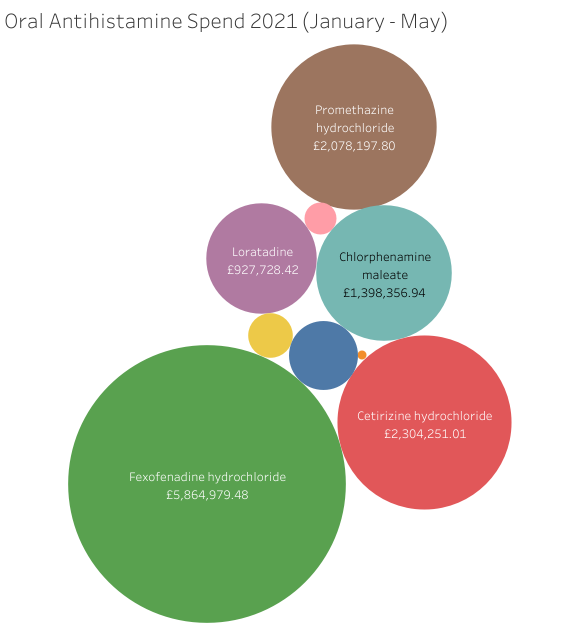

Projects

In this project, I develop a custom Convolutional Neural Network (CNN)
to classify images of fruits and vegetables.
The model is trained on a dataset containing 36 classes,
with 100 images or less per class.
Top skills used include: Python, Machine Learning, PyTorch, Data Science, Statistics
Application of Skills
- Development of image recognition models in health e.g. CT scans.
- Mobile apps for accessibility and learning by identifying objects.
- Object recognition in augmented reality or virtual reality applications.

This portfolio website was developed using the Flask API. It is a demonstration
of my ability to deploy applications & features and serves as a central repository for all of my work.
All passion projects, future APIs, databases and more will be integrated with this portfolio.
Top skills used include: Python, Flask, HTML, CSS
Application of Skills
- Use and implementation of APIs
- Deoplyment and models, features and applications.
- Design of webpages and dashboards without the use of no code tools.

NHS prescribing data was extracted using the available APIs. In addition,
pollen count data was requested and received from the national meteorological (MET) service
office. This data was used to demonstarate multiple skills including but not
limited to data analysis.
Top skills used include: Python, Data Analysis, Statistics, Distributed Computing, Pandas, Numpy
Application of Skills
- Cleaning and aggregation of data from multiple disparate sources.
- In depth statistical analysis of data for impactful and actionable insights.
- Distributed computing of workloads for speed and efficiency.